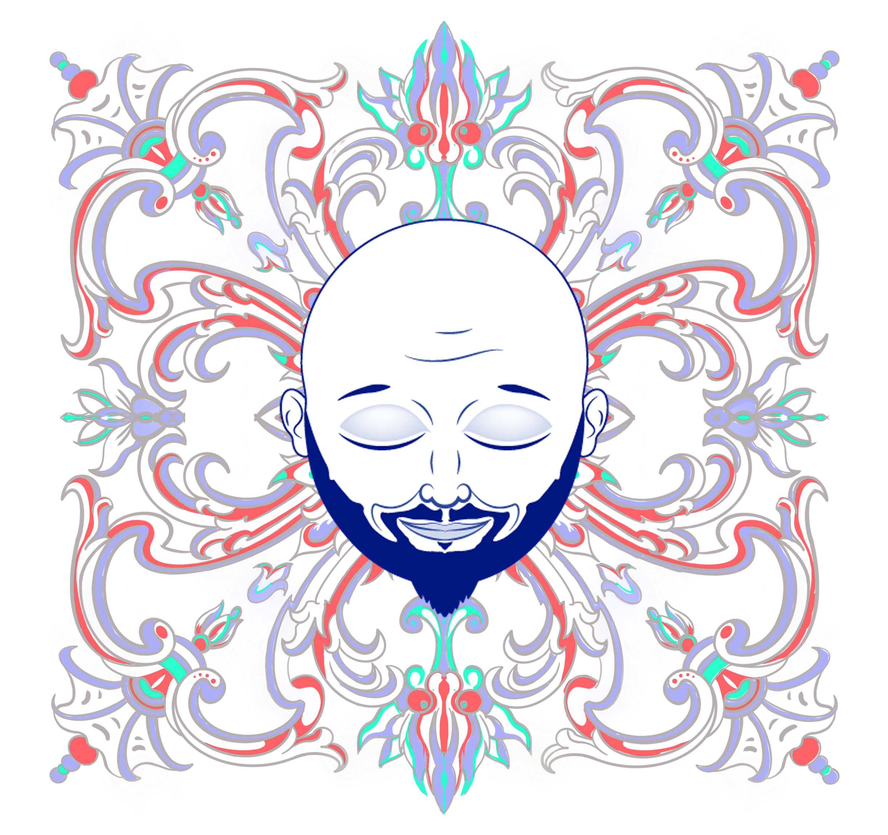

<article class="_container_footer">

  <section class="_header_footer">
    <!-- <div class="_divisor_top"></div> -->
    <div class="_container_ornament">
      
    </div>  
    <div class="_container_firm">
      
    </div>
    <div class="_container_ornament">
      
    </div>   
  </section>

  <section class="_container_contact">     
    <p class="_message">Contáctame!</p>
    <div class="_container_buttons">
      <div class="_contact_buttons">  
        <mat-button class="_button_contact" id="icon_email" mat-menu-item>
          <mat-icon class="_icon_nav">alternate_email</mat-icon>
        </mat-button>
      </div>
      <div class="_contact_buttons">  
        <mat-button class="_button_contact" id="phone" mat-menu-item>
          <mat-icon class="_icon_nav">perm_phone_msg</mat-icon>
        </mat-button>
      </div>
    </div>
  </section>

  <section class="_container_social_networks">
    <div class="_container_logo_socialnet">
      <a href="https://www.linkedin.com/in/sebastian-bellido-9a0a6681/" target="_blank">
        
      </a>
    </div>
    <div class="_container_logo_socialnet">
      <a href="https://www.behance.net/sebastianba389" target="_blank">
        
      </a>
    </div>
    <div class="_container_logo_socialnet">
      <a href="https://github.com/SBellido" target="_blank">
        
      </a>
    </div>
  </section>


  
  <div class="_footer_bottom">
  
    <p class="_copyright"><span>@Copyright</span> | All rights reserved to <span>Sebastián Bellido.</span></p>
  </div>

</article> 